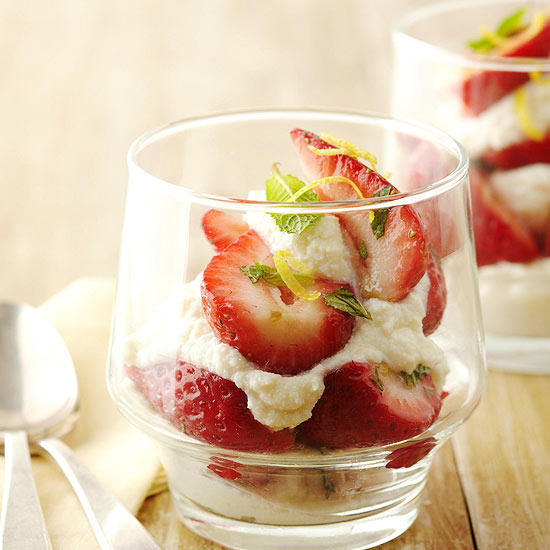
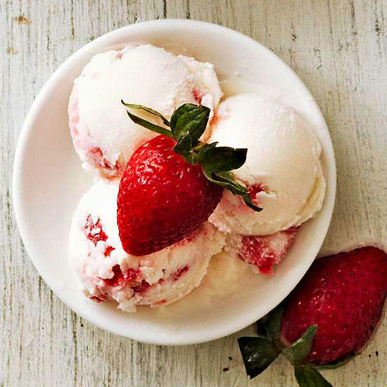

*TIP
Choose firm, but ripe pears.
Ricotta
Ricotta, a versatile Italian cheese, mimics cheesecake in these delicious dessert parfaits.

Ingredients
- pound fresh strawberries, trimmed and halved or quartered
- 1 teaspoon sugar
- 1 tablespoon snipped fresh mint
- 1 15 ounce carton part-skim ricotta cheese
- 3 tablespoons light agave nectar
- 1/2 teaspoon vanilla
- 1/4 teaspoon finely shredded lemon peel
- Fresh mint
Directions
- In a medium bowl combine strawberries, sugar, and the 1 tablespoon snipped mint; gently stir to combine. Let stand about 10 minutes or until berries soften and start to release their juices.
- In another medium bowl combine ricotta, agave nectar, vanilla, and lemon peel. Beat with an electric mixer on medium speed for 2 minutes.
- To assemble, scoop 1 tablespoon of the ricotta mixture into each of six parfait glasses. Top ricotta mixture in each glass with a large spoonful of the strawberry mixture. Repeat layers with the remaining ricotta mixture and strawberry mixture. Garnish with additional fresh mint. Serve immediately or cover and chill for up to 4 hours.
From the Test Kitchen
Any ripe berries will work in this simple and delicious dessert.
Strawberry Frozen Greek Yoghurt
Even better than strawberry ice cream, this yummy frozen yogurt is full of fresh strawberries. It's the perfect creamy dessert to serve to a crowd on a hot day.
No strawberries? No problem. Try this same homemade frozen yogurt recipe with blueberries, blackberries, cherries, or peaches. Whatever fruit you choose, you'll be delighted with the creamy results of this frozen Greek yogurt recipe.

Ingredients
- 3 cups plain Greek low-fat (2%) yogurt
- 1 cup sugar
- 1/4 cup freshly squeezed lemon juice
- 2teaspoons vanilla
- 1/8 teaspoon salt
- 1 cup sliced strawberries
Directions
- In a medium bowl combine the yogurt, sugar, lemon juice, vanilla, and salt. Whisk until smooth.
- Freeze the yogurt mixture in a 1 1/2- to 2-quart ice cream maker according to the manufacturer's directions, adding sliced strawberries for the last minute. Transfer to an airtight container and freeze for 2 to 4 hours before serving. Let stand at room temperature for 5 to 15 minutes before serving.